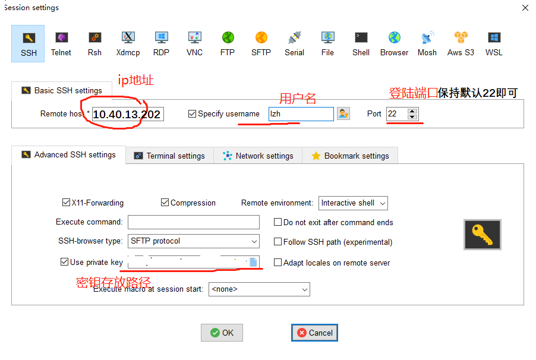
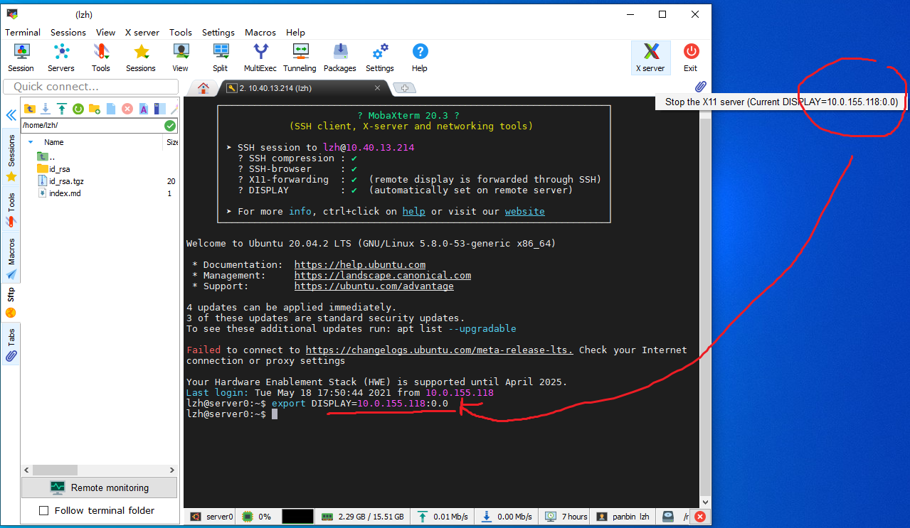
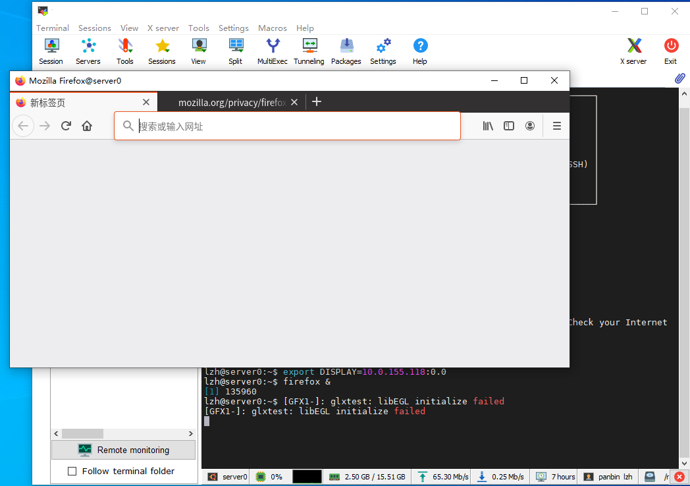

SSH及Linux常用命令
每个JupyterHub账号关联了一个服务器上的Linux账号，所以一些JupyterLab上不方便做的操作，也可以通过SSH登陆服务器直接在Linux上操作
SSH
Windows10、Linux、MacOS可以直接在cmd/Powershell/Terminal中输入ssh命令登陆
ssh 用户名@10.40.13.202
SSH客户端 MobaXterm
推荐在windows上使用的mobaxterm而不是命令行，官网可能下载比较慢，服务器上保存了安装包，点击这里下载
配置步骤
1. 打开MobaXterm，点击session按钮新建一个会话，选择ssh

-
如图所示在对应位置填入ip地址、用户名、端口号和密钥文件在你电脑上的路径 
-
完成配置，这个会话会出现在左侧session侧边栏中，双击即可打开ssh连接
- 如需访问图形化界面，将鼠标放置于MobaXterm右上角X图标上，会显示一个xxx.xxx.xxx.xxx:0.0的值，将当前ssh会话的DISPLAY环境变量修改为与这个值即可  
Linux常用命令
- 几乎所有的命令后面加
--help或者前面加man，都可以看到用法说明 - 绝对路径与相对路径：以
/开头的是从系统的根目录开始找，叫绝对路径；没有/的是从当前工作路径（会显示在shell的提示符上）开始从当前工作目录走到另一个目录，叫相对路径；相对路径有一些特殊符号，如~代表家目录，对于普通用户而言一般是/home/用户名，.表示当前目录，..表示上一级目录 ls 路径显示路径下的文件，-ltra查看所有文件详情cd 路劲表示进入文件夹vim使用Vim编辑器查看文件，关于vim教程请参考https://www.runoob.com/linux/linux-vim.htmltop资源监视器，查看CPU、内存使用情况以及运行的进程ps aux查看所有进程，通过在后面加管道命令可以检索特定的进程，比如ps aux | grep 9888搜索9888号进程，当然了grep是字符串搜索，如果进程包含9888的字样也会显示出来- 如果想杀掉一个进程
ps aux | grep 程序名或进程号或者你的用户名 # ps aux 显示所有进程，grep从中搜索你输入的关键字
# 返回的第一列是进程号
kill -9 进程号
- 后台运行一个程序
nohup 命令 >output.log 2>&1 &
# >output.log 表示将输出日志重定向到output.log
# 2>&1 表示将错误信息重定向到这个日志，这样如果程序异常中断了traceback也会记录下来